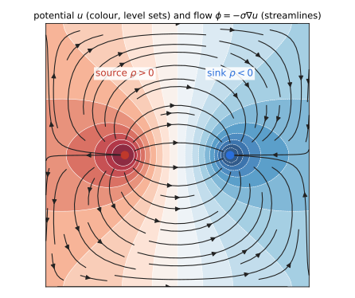
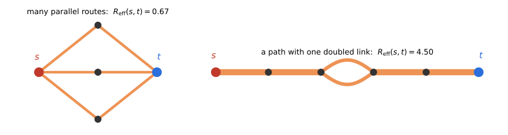
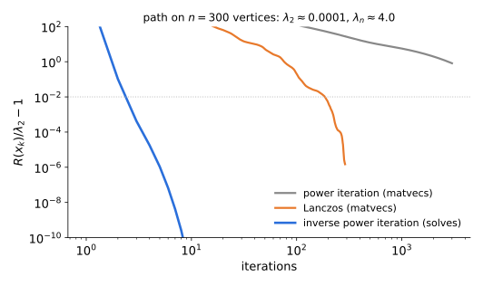
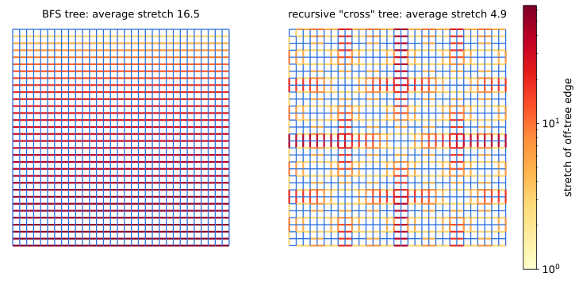
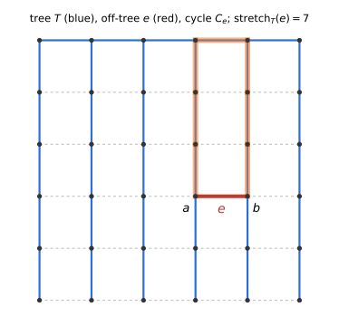
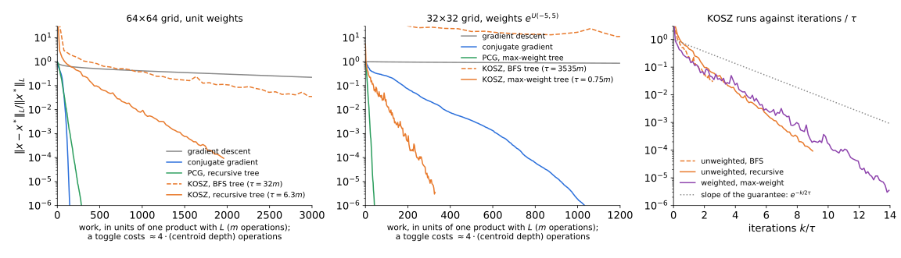
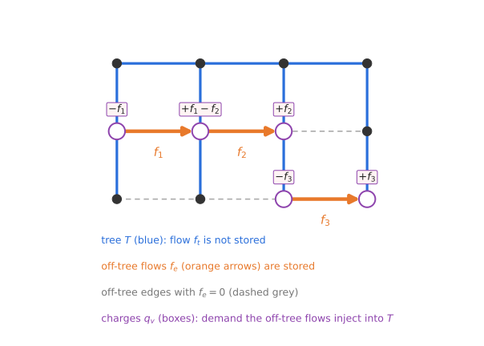
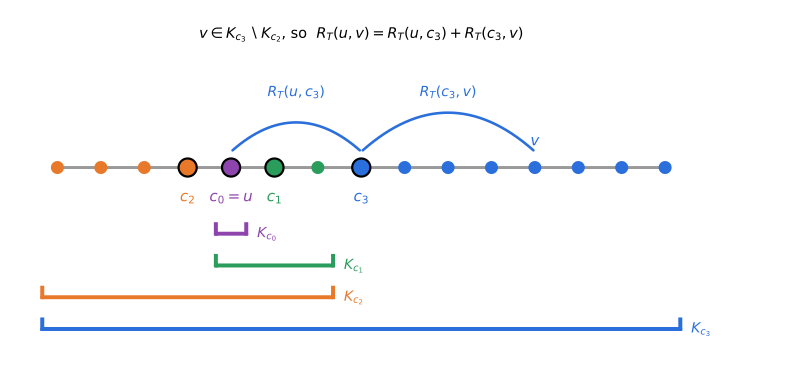

From gradient descent to cycle toggling: randomized coordinate descent in the cycle space
Theorem (Spielman–Teng 2004). An \(\varepsilon\)-approximate solution of \(Lx=b\) can be computed in time \(O(m\log^{c}n\log(1/\varepsilon))\), independently of \(\lambda_2\).
\(G=(V,E,w)\) connected, \(n\) vertices, \(m\) edges; resistances \(r_e=1/w_e\). Orient each edge \(e=(u,v)\) and set \(b_e=\mathbf 1_u-\mathbf 1_v\) (the sign is immaterial; Lecture 2’s \(\nabla\) is \(-B\)). \[B=\begin{pmatrix}\vdots\\ b_e^\top\\ \vdots\end{pmatrix}\in\mathbb R^{m\times n},\qquad L=B^\top WB=\sum_e w_e\,b_eb_e^\top,\qquad W=\operatorname{diag}(w),\ R=W^{-1}.\]
\(x\) is an \(\varepsilon\)-approximate solution if \(\ \|x-x^*\|_L\le\varepsilon\,\|x^*\|_L\).
\[\min_{x\in\mathbb R^n}\ f(x)=\tfrac12x^\top Lx-b^\top x=\tfrac12\sum_ew_e\,(b_e^\top x)^2-b^\top x .\]
Lagrangian duality, through \(B\): give the edge differences their own variable \(y=Bx\in\mathbb R^E\): \[\min_{x,\,y}\ \tfrac12y^\top Wy-b^\top x\qquad\text{s.t.}\quad y=Bx .\] Attach a multiplier \(\phi\in\mathbb R^E\) to the constraint: \[\mathcal L(x,y,\phi)=\tfrac12y^\top Wy-b^\top x+\phi^\top(Bx-y)=\Big[\tfrac12y^\top Wy-\phi^\top y\Big]+\big(B^\top\phi-b\big)^\top x .\]
| variable | constraint | objective | |
|---|---|---|---|
| primal | potentials \(x\in\mathbb R^V\) | none | \(\tfrac12\|x\|_L^2-b^\top x\) |
| dual | flows \(\phi\in\mathbb R^E\) | \(B^\top\phi=b\) | \(\mathcal E(\phi)\) |
| graph | domain \(\Omega\subset\mathbb R^d\) | |
|---|---|---|
| equation | \(Lx=b\) | \(-\operatorname{div}(\sigma\nabla u)=\rho\) (Poisson; \(\rho=0\): Laplace) |
| operators | \(B\), \(B^\top\) | \(\nabla\), \(-\operatorname{div}\) |
| Laplacian | \(L=B^\top WB\) | \(-\operatorname{div}(\sigma\nabla\,\cdot)\), conductivity \(\sigma\leftrightarrow W\) |
| kernel, solvability | \(\ker L=\operatorname{span}(\mathbf 1)\), \(b\perp\mathbf 1\) | constants, \(\int\rho=0\) (Neumann problem, no boundary values) |
| primal | \(\min_x\ \tfrac12x^\top Lx-b^\top x\) | \(\min_u\ \tfrac12\int\sigma|\nabla u|^2-\int\rho u\) (Dirichlet principle) |
| dual | \(\min_{B^\top\phi=b}\ \tfrac12\sum_er_e\phi_e^2\) | \(\min_{\operatorname{div}\phi=\rho}\ \tfrac12\int|\phi|^2/\sigma\) (Thomson principle) |

Poisson on the unit square with insulated sides (Neumann), one source and one sink, \(\sigma\equiv1\).
A flow \(f\in\mathbb R^E\) routes the demand \(\chi\) (with \(\mathbf 1^\top\chi=0\)) if \(B^\top f=\chi\): net outflow \(\chi_u\) at every \(u\). Energy: \(\ \mathcal E(f)=\tfrac12\sum_er_ef_e^2\).
Thomson’s principle. \(\displaystyle\min_{B^\top f=\chi}\mathcal E(f)=\tfrac12\chi^\top L^+\chi\), attained by the electrical flow \(f^*=WBx^*\), \(\ x^*=L^+\chi\) (Ohm’s law: \(f_e=w_e(x_u-x_v)\)).
Weak duality. For any \(f\) routing \(\chi\) and any potentials \(x\), let \(\ \mathcal D(x)=\chi^\top x-\tfrac12x^\top Lx\). Using \(\chi^\top x=f^\top Bx=\sum_ef_e\,b_e^\top x\), \[\boxed{\ \mathcal E(f)-\mathcal D(x)=\frac12\sum_e\frac{\big(r_ef_e-b_e^\top x\big)^2}{r_e}\ \ge0\ }\] Equality iff \(r_ef_e=b_e^\top x\) on every edge (Ohm). The flow \(WBx^*\) routes \(B^\top WBx^*=Lx^*=\chi\) and has equality. \(\blacksquare\)
\[R_{\rm eff}(s,t)=(\mathbf 1_s-\mathbf 1_t)^\top L^+(\mathbf 1_s-\mathbf 1_t)=\text{twice the energy }\mathcal E\text{ of the unit }s\text{–}t\text{ electrical flow}=x^*_s-x^*_t,\quad x^*=L^+(\mathbf 1_s-\mathbf 1_t).\]

Foster’s theorem. \(\displaystyle\sum_{e\in E}w_e\,R_{\rm eff}(e)=n-1.\)
\(\sum_ew_e\,b_e^\top L^+b_e=\operatorname{tr}\big(L^+\sum_ew_eb_eb_e^\top\big)=\operatorname{tr}(L^+L)=\operatorname{rank}L=n-1\). \(\blacksquare\)
\(w_eR_{\rm eff}(e)\in(0,1]\) is the leverage score of \(e\): the fraction of the unit \(u\)–\(v\) flow that uses the edge \(e\) itself.
Next lecture: sampling edges with probability \(\propto w_eR_{\rm eff}(e)\) gives spectral sparsifiers.
Random walk \(P=D^{-1}A\); \(\ h(u,t)\) = expected time to hit \(t\) from \(u\); \(\ \mathrm{vol}(G)=\sum_ud_u=2\sum_ew_e\).
Hitting times are one Laplacian solve. \(h(\cdot,t)\) is the solution, normalized by \(h(t,t)=0\), of \[Lh=d-\mathrm{vol}(G)\,\mathbf 1_t .\]
First-step analysis: \(h(u)=1+\sum_vP_{uv}h(v)\) for \(u\neq t\), i.e. \((Lh)(u)=d_u\). Since \(\mathbf 1^\top Lh=0\), \((Lh)(t)=-\sum_{u\ne t}d_u=d_t-\mathrm{vol}(G)\). \(\blacksquare\)
Recall \(h(\cdot,t)\) solves \(Lh=d-\mathrm{vol}(G)\,\mathbf 1_t\), and \(\mathrm{vol}(G)=\sum_ud_u\).
Commute time identity (Chandra–Raghavan–Ruzzo–Smolensky–Tiwari 1989). \(\ h(s,t)+h(t,s)=\mathrm{vol}(G)\,R_{\rm eff}(s,t).\)
\(h(s,t)+h(t,s)=(\mathbf 1_s-\mathbf 1_t)^\top L^+\big[(d-\mathrm{vol}\,\mathbf 1_t)-(d-\mathrm{vol}\,\mathbf 1_s)\big]=\mathrm{vol}\cdot(\mathbf 1_s-\mathbf 1_t)^\top L^+(\mathbf 1_s-\mathbf 1_t)\). \(\blacksquare\)
One Laplacian solve is a primitive inside many algorithms:
The Laplacian paradigm (Teng 2010): reduce a graph problem to a sequence of Laplacian solves, then use a nearly-linear-time solver.
Work on \(\mathbf 1^\perp\), where \(L\) is invertible with eigenpairs \((\lambda_i,v_i)\), \(0<\lambda_2\le\dots\le\lambda_n\). Pick a random \(x_0\perp\mathbf 1\) and iterate \[x_k=L^+x_{k-1}=L^{+k}x_0 .\]
Theorem. With \(x_0\) random, \(R(x_k)=\dfrac{x_k^\top Lx_k}{x_k^\top x_k}\le(1+\varepsilon)\lambda_2\) after \(k=O(\log n/\varepsilon)\) solves.
Let \(a_i=\langle x_0,v_i\rangle\) and \(N_s=\sum_ia_i^2\lambda_i^{-s}\), so \(R(x_k)=N_{2k-1}/N_{2k}\). By Cauchy–Schwarz, \(s\mapsto\log N_s\) is convex, so the ratios \(N_{s-1}/N_s\) are nonincreasing in \(s\). The last of the \(2k\) ratios is at most their geometric mean: \[R(x_k)\le\Big(\frac{N_0}{N_{2k}}\Big)^{1/2k}\le\lambda_2\Big(\frac{\|x_0\|^2}{a_2^2}\Big)^{1/2k}\le\lambda_2\,n^{1/2k}\quad\text{when }a_2^2\ge\|x_0\|^2/n .\] This holds with constant probability for a random \(x_0\), and \(n^{1/2k}\le1+\varepsilon\) once \(k\ge\ln n/(2\ln(1+\varepsilon))\). \(\blacksquare\)

Minimize \(f(x)=\tfrac12x^\top Lx-b^\top x\). Let \(D=\operatorname{diag}(d_u)\) be the degree matrix and \(P=D^{-1}A\), so \(D^{-1}L=I-P\).
The error \(x_k-x^*\) obeys \(x_{k+1}-x^*=\tfrac12(I+P)(x_k-x^*)\): pure heat diffusion, with no source. Gradient descent on \(Lx=b\) is the diffusion of Lectures 3–4 with the charge \(b\) pumped in at every step.
Gradient descent with the Euclidean gradient and \(\eta=1/\lambda_n\) contracts by \(1-1/\kappa\) per step, \(\kappa=\lambda_n/\lambda_2\); on a \(d\)-regular graph \(\kappa\le2d/\lambda_2=2/\tilde\lambda_2\), so it is at least as fast as the diffusion above. So \(\kappa\ln(1/\varepsilon)\) iterations, each one product with \(L\): \(O(m)\).
| graph | \(\kappa=\lambda_n/\lambda_2\) | GD iterations to \(10^{-6}\) | \(\kappa\ln10^6\) |
|---|---|---|---|
| path, \(n=200\) | 16 211 | 222 291 | 223 959 |
| grid \(32\times32\) | 829 | 11 020 | 11 449 |
| random 3-regular, \(n=1024\) | 34.5 | 393 | 476 |
| complete, any \(n\) | 1 | 1 | — |
\(b=\mathbf 1_s-\mathbf 1_t\) with \(s,t\) far apart. Computed in scripts/verify_bounds.py, §3.
Start from \(x_0=0\). After \(k\) products with \(L\), any method that combines them outputs \(x_k\in\mathcal K_k=\operatorname{span}\{b,Lb,\dots,L^{k-1}b\}\). Then \(x_k-x^*=q(L)(x_0-x^*)\) for a polynomial \(q\) of degree \(\le k\) with \(q(0)=1\), so \[\|x_k-x^*\|_L\ \le\ \max_{\lambda\in[\lambda_2,\lambda_n]}|q(\lambda)|\cdot\|x_0-x^*\|_L .\]
Chebyshev. The best such \(q\) is a rescaled Chebyshev polynomial, with \[\max_{[\lambda_2,\lambda_n]}|q|\ \le\ 2\Big(\frac{\sqrt\kappa-1}{\sqrt\kappa+1}\Big)^k\le2e^{-2k/\sqrt\kappa}.\] Conjugate gradient minimizes \(\|x_k-x^*\|_L\) over \(\mathcal K_k\), so it does at least this well, without knowing \(\lambda_2,\lambda_n\).
| graph | \(\kappa\) | GD | CG | \(\tfrac{\sqrt\kappa}{2}\ln(2\cdot10^6)\) |
|---|---|---|---|---|
| path, \(n=200\) | 16 211 | 222 291 | 100 | 924 |
| grid \(32\times32\) | 829 | 11 020 | 73 | 209 |
| random 3-regular, \(n=1024\) | 34.5 | 393 | 41 | 43 |
\(L\) is local: if \(b\) is supported on \(S\), then \(L^jb\) is supported on the \(j\)-neighborhood of \(S\). So \(x_k\) vanishes outside the \((k-1)\)-neighborhood of \(\operatorname{supp}(b)\).
Lower bound. For a worst-case \(b\) and constant \(\varepsilon\), any method that uses \(L\) only through matrix–vector products (started at \(0\)) needs \(\Omega(\text{diameter})\) products. For the path and the grid this is \(\Omega(\sqrt\kappa)\), so total work \(\Omega(n^2)\) and \(\Omega(n^{1.5})\).
The bad case for locality is a path, but a path can be solved directly in \(O(n)\) time by a forward–backward iteration:
No fill-in, no dependence on \(\kappa\): information crosses the whole path in two passes. The same idea works on any spanning tree.
Preconditioned CG. If \(\ L_H\preceq L_G\preceq\kappa\,L_H\ \) (same kernel \(\mathbf 1\)), PCG finds an \(\varepsilon\)-approximate solution of \(L_Gx=b\) in \(O(\sqrt\kappa\log(1/\varepsilon))\) iterations. Each iteration: one product with \(L_G\) and one solve with \(L_H\).
Spanning tree \(T\). For \(e=(u,v)\), let \(P_T(e)\) be the tree path from \(u\) to \(v\) and \(R_T(u,v)=\sum_{t\in P_T(e)}r_t\).
Stretch: \(\ \mathrm{st}_T(e)=\dfrac{R_T(u,v)}{r_e}=w_e\sum_{t\in P_T(e)}r_t\ \) (unweighted: the length of the tree path). \(\ \mathrm{st}_T(G)=\sum_{e\in E}\mathrm{st}_T(e)\).
Lemma (Boman–Hendrickson 2003). \(\ L_T\preceq L_G\preceq\mathrm{st}_T(G)\,L_T.\)
\(L_T\preceq L_G\): \(T\) is a subgraph. For the other side, Cauchy–Schwarz along the path, exactly as for canonical paths with weighted lengths in Lecture 5: \[w_e(x_u-x_v)^2=w_e\Big(\sum_{t\in P_T(e)}\sqrt{r_t}\cdot\frac{\Delta_tx}{\sqrt{r_t}}\Big)^2\le w_eR_T(u,v)\sum_{t\in P_T(e)}\frac{(\Delta_tx)^2}{r_t}\le\mathrm{st}_T(e)\;x^\top L_Tx .\] Sum over \(e\). \(\blacksquare\)
Theorem (Alon–Karp–Peleg–West 1995; Elkin–Emek–Spielman–Teng 2005; Abraham–Neiman 2012). Every graph has a spanning tree with \(\ \mathrm{st}_T(G)=O(m\log n\log\log n)\), computable in \(O(m\log n\log\log n)\) time. On the grid, \(\Omega(m\log n)\) is necessary (AKPW).

| grid \(k\times k\) | 16 | 32 | 64 | 128 |
|---|---|---|---|---|
| average stretch, BFS tree | 8.5 | 16.5 | 32.5 | 64.5 |
| average stretch, recursive tree | 3.6 | 4.9 | 6.3 | 7.9 |
BFS: \(\approx\sqrt n/2\). Recursive (middle row + middle column, recurse on the quadrants): grows by \(\approx1.4\) each time \(n\) is multiplied by 4, i.e. \(O(\log n)\).
| \(\mathrm{st}_T(G)/m\) | \(\lambda_{\max}(L_T^+L_G)\) | PCG iterations to \(10^{-6}\) | |
|---|---|---|---|
| grid \(32\times32\), BFS tree | 16.5 | 1 632 | 169 |
| grid \(32\times32\), recursive tree | 4.9 | 575 | 97 |
| grid \(32\times32\), plain CG | — | (\(\kappa=829\)) | 73 |
| grid \(64\times64\), recursive tree / plain CG | 6.3 | — | 189 / 146 |
| grid \(32\times32\), weights \(e^{U(-5,5)}\), max-weight tree / plain CG | 0.78 | — | 28 / 1 034 |
KOSZ uses the tree differently: not to precondition, but as a coordinate system for the space of flows.
\(F(z)=\tfrac12z^\top Mz-p^\top z\), \(\ M\succ0\) on \(\mathbb R^N\); \(\ \mu=\lambda_{\min}(M)\); \(\ z^*=M^{-1}p\).
Randomized coordinate descent (RCD). Pick \(i\) with probability \(\ \pi_i=M_{ii}/\operatorname{tr}M\), and minimize \(F\) exactly along \(e_i\): \[z\ \leftarrow\ z-\frac{\nabla_iF(z)}{M_{ii}}\,e_i .\]
Theorem (Leventhal–Lewis 2010; Nesterov 2012). \(\ \ \mathbb E\big[F(z_{k+1})-F^*\,\big|\,z_k\big]\ \le\ \Big(1-\dfrac{\mu}{\operatorname{tr}M}\Big)\big(F(z_k)-F^*\big).\)
One step. \(F\) restricted to the line \(z+se_i\) is \(F(z)+s\nabla_iF+\tfrac{s^2}2M_{ii}\), minimized at \(s=-\nabla_iF/M_{ii}\), with decrease \(\dfrac{(\nabla_iF)^2}{2M_{ii}}\).
Average. \(\ \mathbb E[\text{decrease}]=\sum_i\dfrac{M_{ii}}{\operatorname{tr}M}\cdot\dfrac{(\nabla_iF)^2}{2M_{ii}}=\dfrac{\|\nabla F\|^2}{2\operatorname{tr}M}.\)
Strong convexity. \(\ \|\nabla F\|^2=\|M(z-z^*)\|^2\ge\mu\,(z-z^*)^\top M(z-z^*)=2\mu\,(F(z)-F^*)\). \(\blacksquare\)
Fix a spanning tree \(T\). Every off-tree edge \(e=(a,b)\) closes a fundamental cycle \(C_e\): \(e\) from \(a\) to \(b\), then the tree path from \(b\) back to \(a\).

\(c_e\in\{0,\pm1\}^E\): the unit circulation around \(C_e\), so \(B^\top c_e=0\) and \(c_e(e)=1\).
Lemma. Let \(f_0\) be the unique flow on \(T\) routing \(\chi\). The flows routing \(\chi\) are exactly \[f=f_0+Cy=f_0+\sum_{e\notin T}y_e\,c_e,\qquad y\in\mathbb R^{E\setminus T},\] and \(y_e=f_e\) for every off-tree \(e\).
\(f-f_0\) is a circulation. Subtract \(\sum_{e\notin T}f_ec_e\): what is left is a circulation supported on the tree, hence \(0\). \(\blacksquare\)
\[F(y)=\mathcal E(f_0+Cy),\qquad \nabla^2F=C^\top RC .\]
Physical picture. Pick a cycle; push just enough flow around it that the potential drops around it sum to zero. KCL holds throughout; we repair KVL one cycle at a time.
In the variables \(z_e=\sqrt{r_e}\,y_e\) the Hessian is \(\ M=R_{\rm off}^{-1/2}\,C^\top RC\,R_{\rm off}^{-1/2}\), with \(R_{\rm off}=\operatorname{diag}(r_e)_{e\notin T}\).
Lemma. (1) \(\ M_{ee}=\dfrac{R_e}{r_e}=1+\mathrm{st}_T(e)\). \(\quad\) (2) \(\ \lambda_{\min}(M)\ge1\). \(\quad\) (3) \(\ \operatorname{tr}M=\tau(T):=\displaystyle\sum_{e\notin T}\big(1+\mathrm{st}_T(e)\big)\le m+\mathrm{st}_T(G)\).
Corollary (RCD on flows). Sample \(e\notin T\) with probability \(\ \dfrac{R_e/r_e}{\tau(T)}\) and toggle \(C_e\). Then \[\mathbb E\big[\mathcal E(f_{k})-\mathcal E^*\big]\ \le\ \Big(1-\frac1{\tau(T)}\Big)^{k}\big(\mathcal E(f_0)-\mathcal E^*\big).\]
Optimality conditions for \(\min\{\mathcal E(f):B^\top f=\chi\}\):
The gap is the violation. The tree potentials satisfy Ohm exactly on \(T\), and the Ohm residual \(r_ef_e-b_e^\top x_T\) equals \(\Delta_e(f)\) on \(e\notin T\). By the duality gap identity (Electrical flows slide), \[\mathcal E(f)-\mathcal D(x_T)=\frac12\sum_{e\notin T}\frac{\Delta_e(f)^2}{r_e}.\]
Geometry, in the energy inner product \(\langle f,g\rangle_R=\sum_er_ef_eg_e\) (so \(\|c_e\|_R^2=R_e\)):
Expected progress = gap / \(\tau\). With \(p_e=\dfrac{R_e/r_e}{\tau(T)}\), \[\mathbb E\big[\mathcal E(f)-\mathcal E(f')\big]=\sum_{e\notin T}\frac{R_e}{r_e\tau}\cdot\frac{\Delta_e^2}{2R_e}=\frac{\mathcal E(f)-\mathcal D(x_T)}{\tau}.\] The gap is sandwiched: \(\quad\mathcal E(f)-\mathcal E^*\ \le\ \mathcal E(f)-\mathcal D(x_T)\ \le\ \tau\,\big(\mathcal E(f)-\mathcal E^*\big)\).
The two halves are exactly \(\lambda_{\min}(M)\ge1\) and \(\lambda_{\max}(M)\le\operatorname{tr}M=\tau\). Equivalently, the rescaled cycles \(c_e/\sqrt{r_e}\) form a frame for the cycle space with frame bounds \([1,\tau]\). The tree supplies a dual certificate whose gap is the squared gradient, so weak duality is the strong-convexity (Polyak–Łojasiewicz) inequality.
SimpleSolver (KOSZ 2013). Input \(G\), demand \(\chi\), accuracy \(\varepsilon\).
Two things remain to prove:
And one thing remains to build:
Lemma. \(\ \mathcal E(f_0)\le\mathrm{st}_T(G)\cdot\mathcal E^*\).
\(f_0\) is the only flow on \(T\) routing \(\chi\), so it is the electrical flow of the tree, and by Thomson \(\mathcal E(f_0)=\tfrac12\chi^\top L_T^+\chi\). By Boman–Hendrickson, \(L_G\preceq s\,L_T\) with \(s=\mathrm{st}_T(G)\), and both have kernel \(\mathbf 1\), so \(L_T^+\preceq s\,L_G^+\).
Why inversion reverses \(\preceq\): convex conjugates. For \(A\succeq0\) with kernel \(\mathbf 1\) and \(\chi\perp\mathbf 1\), the conjugate of \(\phi_A(x)=\tfrac12x^\top Ax\) is \[\phi_A^*(\chi)=\sup_x\big(\chi^\top x-\tfrac12x^\top Ax\big)=\tfrac12\chi^\top A^+\chi\qquad(\text{attained at }x=A^+\chi).\] Conjugation reverses pointwise order: \(\phi_{L_G}\le\phi_{sL_T}\) gives \(\phi_{L_G}^*\ge\phi_{sL_T}^*\), i.e. \[\mathcal E^*=\tfrac12\chi^\top L_G^+\chi\ \ge\ \tfrac12\chi^\top(sL_T)^+\chi=\frac1s\,\tfrac12\chi^\top L_T^+\chi=\frac{\mathcal E(f_0)}{s}.\ \blacksquare\]
Lemma. Let \(x_T=x_T(f)\) be the tree-induced potentials of a flow \(f\) routing \(\chi\). Then \[\|x_T-x^*\|_L^2\ \le\ 2\big(\mathcal E(f)-\mathcal D(x_T)\big)\ =\ \sum_{e\notin T}\frac{\Delta_e(f)^2}{r_e}\ =\ \|\nabla_zF\|^2\ \le\ 2\tau(T)\,\big(\mathcal E(f)-\mathcal E^*\big).\]
First inequality: \(\ \|x_T-x^*\|_L^2=2\big(\mathcal D(x^*)-\mathcal D(x_T)\big)=2\big(\mathcal E^*-\mathcal D(x_T)\big)\le2\big(\mathcal E(f)-\mathcal D(x_T)\big)\).
Equality: the boxed duality gap, times \(2\). On tree edges \(r_tf_t=b_t^\top x_T\), so those terms vanish. On \(e=(a,b)\notin T\), \(\ r_ef_e-b_e^\top x_T=r_ef_e+\big(x_T(b)-x_T(a)\big)=\Delta_e(f)\), the drop around \(C_e\).
Gradient: \(\ \partial F/\partial z_e=\Delta_e/\sqrt{r_e}\).
Last inequality: for a quadratic, \(\ \|\nabla F\|^2=\|M(z-z^*)\|^2\le2\lambda_{\max}(M)(F-F^*)\), with \(\lambda_{\max}(M)\le\operatorname{tr}M=\tau(T)\) and \(F=\mathcal E\). \(\blacksquare\)
The duality gap of the tree potentials is (half) the squared gradient. Smoothness (\(\lambda_{\max}(M)\le\tau\), the upper half of the sandwich) turns small energy suboptimality into small KVL violations, and weak duality turns small violations into accurate potentials.
Three ingredients, with \(\tau=\tau(T)\) and \(\mathcal E^*=\tfrac12\|x^*\|_L^2\) the optimal energy:
Start. \(\ \mathcal E(f_0)\le\mathrm{st}_T(G)\cdot\mathcal E^*\).
RCD. Toggling a cycle \(C_e\) sampled with probability \(\propto R_e/r_e\) gives \(\ \mathbb E[\mathcal E(f_k)-\mathcal E^*]\le\big(1-\tfrac1\tau\big)^k\big(\mathcal E(f_0)-\mathcal E^*\big)\).
Stop. For the tree-induced potentials \(x_T\) of any flow \(f\) routing \(\chi\): \(\ \|x_T-x^*\|_L^2\le2\tau\,\big(\mathcal E(f)-\mathcal E^*\big)\).
Theorem (KOSZ 2013). After \(K\ge\tau(T)\ln\dfrac{\tau(T)\,\mathrm{st}_T(G)}{\varepsilon}\) toggles, \(\ \mathbb E\,\|x_T(f_K)-x^*\|_L^2\le\varepsilon\,\|x^*\|_L^2\). (For an \(\varepsilon\)-approximate solution in the sense of the definition, replace \(\varepsilon\) by \(\varepsilon^2\): same order of \(K\).)
Chain the three lemmas (stop, then RCD, then start): \[\mathbb E\|x_T-x^*\|_L^2\ \overset{\rm stop}\le\ 2\tau\,\mathbb E[\mathcal E(f_K)-\mathcal E^*]\ \overset{\rm RCD}\le\ 2\tau\,e^{-K/\tau}\big(\mathcal E(f_0)-\mathcal E^*\big)\ \overset{\rm start}\le\ \tau\,e^{-K/\tau}\,\mathrm{st}_T(G)\,\|x^*\|_L^2\le\varepsilon\,\|x^*\|_L^2.\ \blacksquare\]
Running time. With Abraham–Neiman, \(\tau(T)\le m+\mathrm{st}_T(G)=O(m\log n\log\log n)\), and \(\log(\tau\,\mathrm{st}_T(G)/\varepsilon)=O(\log(n/\varepsilon))\). With \(O(\log n)\) per toggle: \[O\big(m\log^2n\,\log\log n\,\log(n/\varepsilon)\big).\]
A toggle of \(e=(a,b)\) reads one number and writes one push:
Never store the tree flows. The off-tree flows determine the tree flow: it is the unique tree flow routing \(\chi+q\), where \(q\) is the net demand the off-tree flows inject into \(T\). Pushing \(\alpha\) from \(b\) to \(a\) changes \(q\) at two vertices only: \(\ q_b\mathrel{+}=\alpha,\ q_a\mathrel{-}=\alpha\). The cost moves from the write to the read: we must recover \(x_T(b)-x_T(a)\) from \(q\).
Read = two queries. The off-tree flows inject charges \(q=\sum_{e=(a,b)\notin T}f_e(\mathbf 1_b-\mathbf 1_a)\) into \(T\), the tree flow routes \(\chi+q\), and with \(R_T\) the resistance metric of \(T\), \[x_T(u)=x_0(u)-\tfrac12\sum_vq_v\,R_T(u,v)+\text{const},\qquad x_0=L_T^+\chi .\] The read \(x_T(b)-x_T(a)\) is two charge-weighted sums of tree distances.
Centroid tree. Every tree has a vertex whose removal leaves components of size \(\le n/2\). Recursing gives a centroid tree of depth \(\le\log_2n+1\), and if \(c\) is the centroid-tree LCA of \(u,v\), then \(c\) lies on the tree path from \(u\) to \(v\): \[R_T(u,v)=R_T(u,c)+R_T(c,v).\]
Store at each centroid the total charge and the charge-weighted distance of its component. An update \(q_v\mathrel{+}=\alpha\) and a query at \(u\) both walk the \(\le\log_2n+1\) centroid ancestors.
Each toggle costs \(O(\log n)\) after \(O(n\log n)\) preprocessing. The same structure returns \(R_T(a,b)\), hence the sampling probabilities.

Standalone: demos/laplacian-solvers-demo.html (append #toggle to open the second tab). Try: unit grid vs. weighted grid; BFS vs. recursive vs. max-weight tree; step through single toggles on a small grid.
Reading: Vishnoi, Lx = b, Parts I–II; KOSZ §§3–5; Spielman’s Spectral and Algebraic Graph Theory, chapters on solvers and elimination.

State of the data structure (a \(3\times4\) grid, spanning tree \(T\)):
Lemma (potentials from charges). Let \(q=\sum_{e=(a,b)\notin T}f_e(\mathbf 1_b-\mathbf 1_a)\), the net demand that off-tree flows inject into \(T\). Then, up to an additive constant, \[x_T=x_0-\tfrac12\Psi,\qquad\Psi(u):=\sum_vq_v\,R_T(u,v),\] where \(x_0=L_T^+\chi\) are the potentials of \(f_0\).
The tree flow routes \(\chi+q\), so \(x_T=L_T^+(\chi+q)=x_0+L_T^+q\). For any connected graph, and in particular for \(T\): \(\ R_T(u,v)=(\mathbf 1_u-\mathbf 1_v)^\top L_T^+(\mathbf 1_u-\mathbf 1_v)=L^+_{T,uu}+L^+_{T,vv}-2L^+_{T,uv}\). Multiply by \(q_v\) and sum over \(v\), using \(\sum_vq_v=0\): \[\Psi(u)=\sum_vq_vL^+_{T,vv}-2\,(L_T^+q)(u)=\text{const}-2(L_T^+q)(u).\ \blacksquare\]
So a toggle is: two queries \(\Psi(a),\Psi(b)\) (the read needs \(x_T\) only at \(a\) and \(b\); the constant cancels in \(x_T(b)-x_T(a)\), and every push keeps \(\sum_vq_v=0\)) and two point updates \(q_b\mathrel{+}=\alpha\), \(q_a\mathrel{-}=\alpha\). The next two slides do both in \(O(\log n)\).
Lemma. Every tree on \(N\) vertices has a centroid: a vertex whose removal leaves components of size \(\le N/2\).
Start anywhere; while some component of \(T-c\) has \(>N/2\) vertices, move \(c\) to its neighbor in it. The component on the other side has \(<N/2\) vertices, so we never step back. \(\blacksquare\)
Remove the centroid \(c\) of \(T\); recurse on each component. This gives the centroid tree: \(c\) is the parent of the centroids of the components of \(K_c-c\), where \(K_c\) is the component in which \(c\) was chosen.

For each centroid \(c\) with parent \(\hat c\) in the centroid tree (\(D^\uparrow\) only for \(c\ne\) root), store \[S_c=\sum_{v\in K_c}q_v,\qquad D_c=\sum_{v\in K_c}q_v\,R_T(v,c),\qquad D^\uparrow_c=\sum_{v\in K_c}q_v\,R_T(v,\hat c).\]
Update \(q_v\mathrel{+}=\alpha\): for each centroid ancestor \(c\) of \(v\): \(\ S_c\mathrel{+}=\alpha\), \(\ D_c\mathrel{+}=\alpha R_T(v,c)\), \(\ D^\uparrow_c\mathrel{+}=\alpha R_T(v,\hat c)\).
Query \(\Psi(u)\): with \(u=c_0,c_1,\dots,c_\ell\) the centroid ancestors of \(u\) (bottom-up), \[\Psi(u)=\sum_{i=0}^{\ell}\Big[\big(D_{c_i}-D^\uparrow_{c_{i-1}}\big)+R_T(u,c_i)\big(S_{c_i}-S_{c_{i-1}}\big)\Big]\qquad(\text{terms with }c_{-1}\text{ are }0).\]
The vertices \(v\in K_{c_i}\setminus K_{c_{i-1}}\) are exactly those whose centroid-tree LCA with \(u\) is \(c_i\). For them \(R_T(u,v)=R_T(u,c_i)+R_T(c_i,v)\). Summing \(q_v\) times this over the set gives the \(i\)-th term, because \(\hat c_{i-1}=c_i\). \(\blacksquare\)